Citater
100 citater med kilde og billedlicens. Hvert citat er kontrolleret mod kilden af en uafhængig gennemgang.
Citater
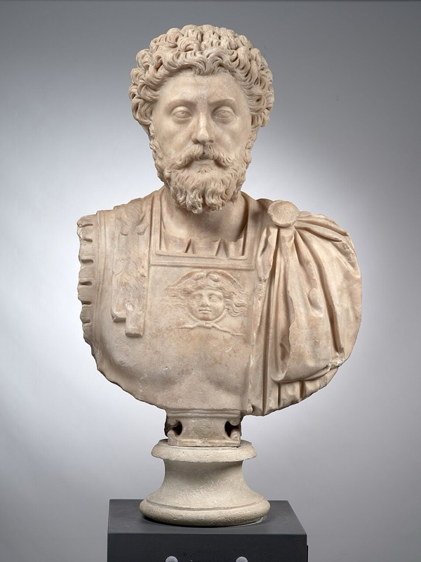
Every moment think steadily as a Roman and a man to do what thou hast in hand with perfect and simple dignity, and feeling of affection, and freedom, and justice, and to give thyself relief from all other thoughts.Marcus Aurelius 121–180 CE Meditations (Τὰ εἰς ἑαυτόν), c. 170–180 CE · Book II, §5 · Overs. George Long Foto: Daniel Martin, CC BY-SA 4.0, via Wikimedia Commons (https://commons.wikimedia.org/wiki/File:MSR-ra-61-b-1-DM.jpg) · CC BY-SA 4.0

In the morning when thou risest unwillingly, let this thought be present,—I am rising to the work of a human being.Marcus Aurelius 121–180 CE Meditations, c. 170–180 CE · Book V, §1 · Overs. George Long Foto: Daniel Martin, CC BY-SA 4.0, via Wikimedia Commons (https://commons.wikimedia.org/wiki/File:MSR-ra-61-b-1-DM.jpg) · CC BY-SA 4.0

No longer talk at all about the kind of man that a good man ought to be, but be such.Marcus Aurelius 121–180 CE Meditations, c. 170–180 CE · Book X, §16 · Overs. George Long Foto: Daniel Martin, CC BY-SA 4.0, via Wikimedia Commons (https://commons.wikimedia.org/wiki/File:MSR-ra-61-b-1-DM.jpg) · CC BY-SA 4.0

Nothing great … is produced suddenly, since not even the grape or the fig is.Epictetus c. 50–c. 135 CE Discourses (recorded by Arrian), c. 108 CE · Book I, ch. 15 ('What philosophy promises') · Overs. George Long Foto: William Sonmans / Michael Burghers, Public domain, via Wikimedia Commons (https://commons.wikimedia.org/wiki/File:Epicteti_Enchiridion_Latinis_versibus_adumbratum_(Oxford_1715)_frontispiece_(cropped).jpg) · Public domain
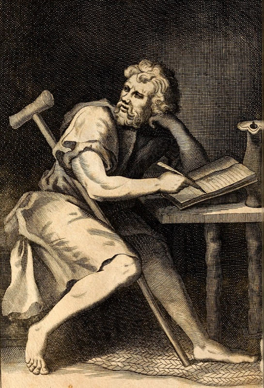
Every habit and faculty is maintained and increased by the corresponding actions: the habit of walking by walking, the habit of running by running. If you would be a good reader, read; if a writer, write.Epictetus c. 50–c. 135 CE Discourses (recorded by Arrian), c. 108 CE · Book II, ch. 18 ('How we should struggle against appearances') · Overs. George Long Foto: William Sonmans / Michael Burghers, Public domain, via Wikimedia Commons (https://commons.wikimedia.org/wiki/File:Epicteti_Enchiridion_Latinis_versibus_adumbratum_(Oxford_1715)_frontispiece_(cropped).jpg) · Public domain

The journey of a thousand li commenced with a single step.Laozi (traditional attribution) trad. 6th century BCE Tao Te Ching (道德經), c. 4th century BCE (compiled) · Chapter 64, §2 · Overs. James Legge Foto: Zhang Lu, Public domain, via Wikimedia Commons (https://commons.wikimedia.org/wiki/File:Zhang_Lu-Laozi_Riding_an_Ox_(cropped).jpg) · Public domain

He who overcomes others is strong; he who overcomes himself is mighty.Laozi (traditional attribution) trad. 6th century BCE Tao Te Ching (道德經), c. 4th century BCE (compiled) · Chapter 33, §1 · Overs. James Legge Foto: Zhang Lu, Public domain, via Wikimedia Commons (https://commons.wikimedia.org/wiki/File:Zhang_Lu-Laozi_Riding_an_Ox_(cropped).jpg) · Public domain

The prosecution of learning may be compared to what may happen in raising a mound. If there want but one basket of earth to complete the work, and I stop, the stopping is my own work.Confucius 551–479 BCE Analects (論語), compiled 5th–3rd century BCE · Book IX (Tsze Han), ch. 18 (ch. 19 in some numberings) · Overs. James Legge Foto: Anonymous Chinese painter of the Western Han period, Public domain, via Wikimedia Commons (https://commons.wikimedia.org/wiki/File:Confucius,_fresco_from_a_Western_Han_tomb_of_Dongping_County,_Shandong_province,_China.jpg) · Public domain
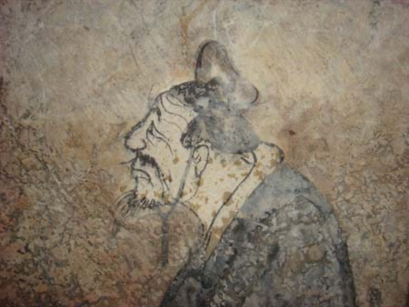
The superior man wishes to be slow in his speech and earnest in his conduct.Confucius 551–479 BCE Analects (論語), compiled 5th–3rd century BCE · Book IV (Le Jin), ch. 24 · Overs. James Legge Foto: Anonymous Chinese painter of the Western Han period, Public domain, via Wikimedia Commons (https://commons.wikimedia.org/wiki/File:Confucius,_fresco_from_a_Western_Han_tomb_of_Dongping_County,_Shandong_province,_China.jpg) · Public domain

If one man conquer in battle a thousand times thousand men, and if another conquer himself, he is the greatest of conquerors.The Buddha (as recorded in the Pali Canon) trad. c. 5th century BCE Dhammapada, compiled c. 3rd century BCE · Verse 103 (ch. VIII, 'The Thousands') · Overs. F. Max Müller Foto: Tevaprapas Makklay, CC BY-SA 3.0, via Wikimedia Commons (https://commons.wikimedia.org/wiki/File:Buddha_in_Sarnath_Museum_(Dhammajak_Mutra).jpg) · CC BY-SA 3.0
Earnestness is the path of immortality (Nirvana), thoughtlessness the path of death. Those who are in earnest do not die, those who are thoughtless are as if dead already.The Buddha (as recorded in the Pali Canon) trad. c. 5th century BCE Dhammapada, compiled c. 3rd century BCE · Verse 21 (ch. II, 'On Earnestness') · Overs. F. Max Müller Foto: Tevaprapas Makklay, CC BY-SA 3.0, via Wikimedia Commons (https://commons.wikimedia.org/wiki/File:Buddha_in_Sarnath_Museum_(Dhammajak_Mutra).jpg) · CC BY-SA 3.0
Do thine allotted task! Work is more excellent than idleness; The body's life proceeds not, lacking work.Bhagavad Gita (words of Krishna) composed c. 2nd century BCE–2nd century CE Bhagavad Gita (Mahabharata, Bhishma Parva), c. 2nd c. BCE–2nd c. CE · Chapter III, verse 8 · Overs. Sir Edwin Arnold Foto: Anonymous, Public domain, via Wikimedia Commons (https://commons.wikimedia.org/wiki/File:Krishna_and_Arjun_on_the_chariot,_Mahabharata,_18th-19th_century,_India.jpg) · Public domain

Just as iron rusts unless it is used, and water putrifies or, in cold, turns to ice, so our intellect spoils unless it is kept in use.Leonardo da Vinci 1452–1519 Notebooks (Codex Atlanticus), c. 1490s–1510s · Richter no. 1177 (within the 'Philosophical Maxims / Morals' section) · Overs. Jean Paul Richter Foto: Attributed to Francesco Melzi, Public domain, via Wikimedia Commons (https://commons.wikimedia.org/wiki/File:Francesco_Melzi_-_Portrait_of_Leonardo_(colour_correction).png) · Public domain

I have learned that success is to be measured not so much by the position that one has reached in life as by the obstacles which he has overcome while trying to succeed.Booker T. Washington 1856–1915 Up from Slavery: An Autobiography, 1901 · Chapter II, 'Boyhood Days' Foto: Harris & Ewing, Public domain, via Wikimedia Commons (https://commons.wikimedia.org/wiki/File:Booker_T_Washington_retouched_flattened-crop.jpg) · Public domain
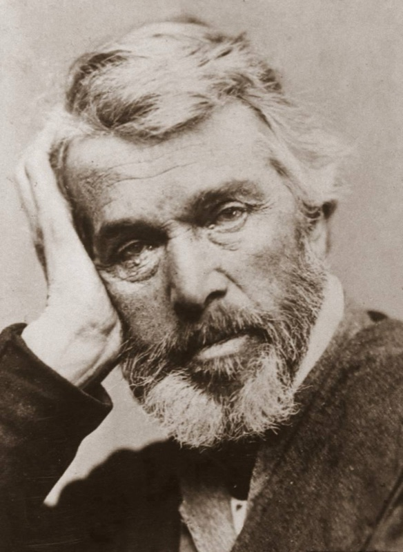
Blessed is he who has found his work; let him ask no other blessedness.Thomas Carlyle 1795–1881 Past and Present, 1843 · Book III, ch. XI, 'Labour' Foto: Elliott & Fry, Public domain, via Wikimedia Commons (https://commons.wikimedia.org/wiki/File:Thomas_Carlyle_lm.jpg) · Public domain
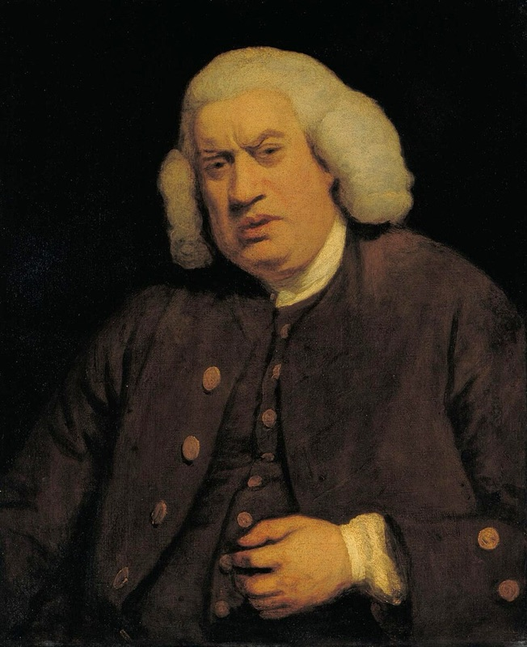
Great works are performed not by strength, but perseverance.Samuel Johnson 1709–1784 The History of Rasselas, Prince of Abissinia, 1759 · Chapter XIII (Imlac speaking) Foto: Joshua Reynolds, Public domain, via Wikimedia Commons (https://commons.wikimedia.org/wiki/File:Samuel_Johnson_by_Joshua_Reynolds.jpg) · Public domain
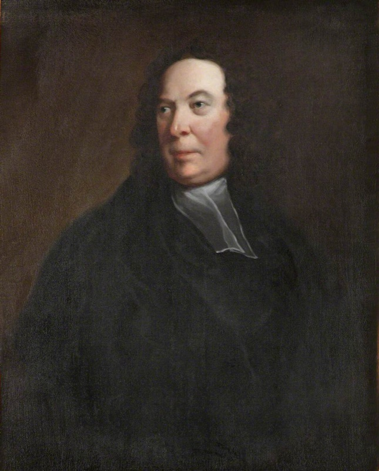
Procrastination is the thief of time.Edward Young 1683–1765 The Complaint, or Night-Thoughts on Life, Death, & Immortality, 1742 · Night I, line 393 Foto: Joseph Highmore, Public domain, via Wikimedia Commons (https://commons.wikimedia.org/wiki/File:Joseph_Highmore_(1692-1780)_-_Edward_Young_(1683%E2%80%931765)_-_ASC-132_-_All_Souls_College.jpg) · Public domain
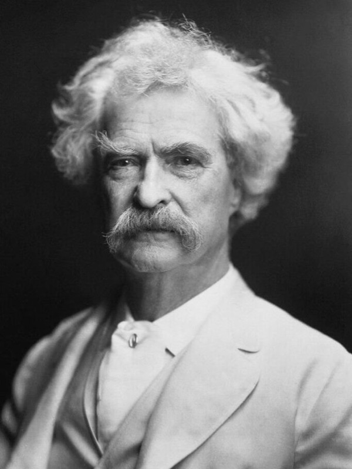
Habit is habit, and not to be flung out of the window by any man, but coaxed down-stairs a step at a time.Mark Twain 1835–1910 The Tragedy of Pudd'nhead Wilson, 1894 · Chapter VI epigraph ('Pudd'nhead Wilson's Calendar') Foto: A.F. Bradley, New York, Public domain, via Wikimedia Commons (https://commons.wikimedia.org/wiki/File:Mark_Twain_by_AF_Bradley_(cropped_2).jpg) · Public domain

I'm not afraid of storms, for I'm learning how to sail my ship.Louisa May Alcott 1832–1888 Little Women (Part Second, 1869), 1868–69 · Chapter 44 ('My Lord and Lady'), spoken by Amy Foto: Warren's Portraits, Boston, c. 1870 (restored by Adam Cuerden), public domain, via Wikimedia Commons (https://commons.wikimedia.org/wiki/File:Louisa_May_Alcott,_c._1870_-_Warren%27s_Portraits,_Boston.jpg) · Public domain

Nothing contributes so much to tranquillise the mind as a steady purpose—a point on which the soul may fix its intellectual eye.Mary Shelley 1797–1851 Frankenstein; or, The Modern Prometheus, 1818 · Letter 1 (Walton to Mrs. Saville) Foto: Richard Rothwell, Public domain, via Wikimedia Commons (https://commons.wikimedia.org/wiki/File:Mary_Wollstonecraft_Shelley_Rothwell.tif) · Public domain

Patience, Firmness, and Perseverance were my only weapons; and these I resolved to use to the utmost.Anne Brontë 1820–1849 Agnes Grey, 1847 · Chapter III, 'A Few More Lessons' Foto: Charlotte Brontë, Public domain, via Wikimedia Commons (https://commons.wikimedia.org/wiki/File:AnneBronte.jpg) · Public domain
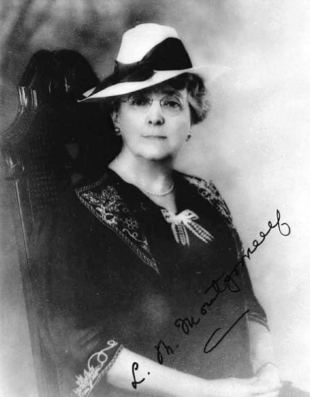
Isn't it nice to think that tomorrow is a new day with no mistakes in it yet?L. M. Montgomery 1874–1942 Anne of Green Gables, 1908 · Chapter XXI, 'A New Departure in Flavorings' Foto: Unknown author, Public domain, via Wikimedia Commons (https://commons.wikimedia.org/wiki/File:LMM_signed_photo.jpg) · Public domain
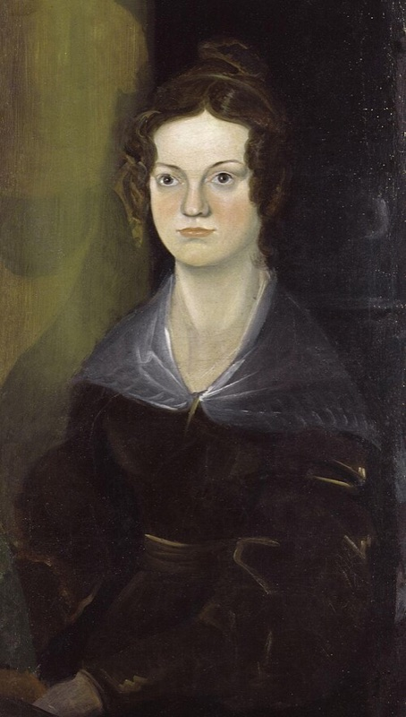
I care for myself. The more solitary, the more friendless, the more unsustained I am, the more I will respect myself.Charlotte Brontë 1816–1855 Jane Eyre: An Autobiography, 1847 · Chapter XXVII Foto: Branwell Brontë, Public domain, via Wikimedia Commons (https://commons.wikimedia.org/wiki/File:Charlotte_Bront%C3%AB_by_Patrick_Branwell_Bront%C3%AB_restored.jpg) · Public domain
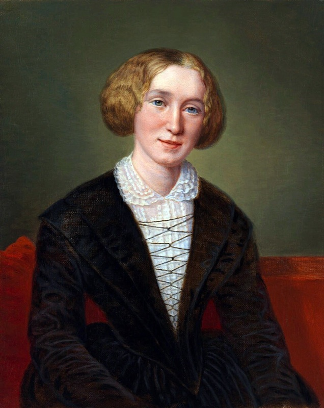
The strongest principle of growth lies in human choice.George Eliot 1819–1880 Daniel Deronda, 1876 · Book VI, Chapter XLII (Mordecai speaking) Foto: replica by François D’Albert Durade (1804–1886), Public domain, via Wikimedia Commons (https://commons.wikimedia.org/wiki/File:George_Eliot,_por_Fran%C3%A7ois_D%27Albert_Durade.jpg) · Public domain
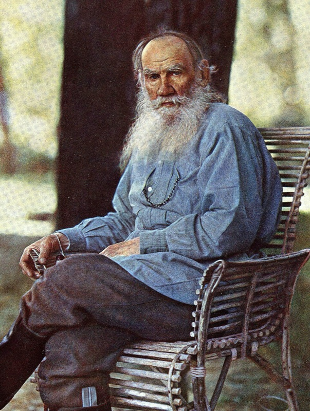
There is nothing stronger than those two: patience and time, they will do it all.Leo Tolstoy 1828–1910 War and Peace, 1869 · Book Ten, ch. XVI (Maude); Russian vol. 3, part 2, ch. XVI — Kutuzov to Prince Andrew · Overs. Louise and Aylmer Maude Foto: Sergei Prokudin-Gorskii, Public domain, via Wikimedia Commons (https://commons.wikimedia.org/wiki/File:Leo_Tolstoy_1908_Portrait_(3x4_cropped).jpg) · Public domain
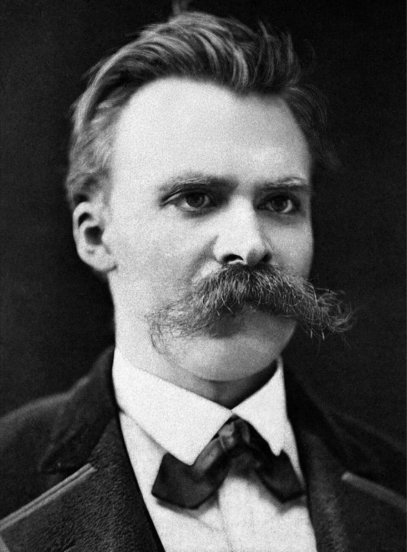
If a man knows the wherefore of his existence, then the manner of it can take care of itself.Friedrich Nietzsche 1844–1900 Twilight of the Idols (Götzen-Dämmerung), 1889 · 'Maxims and Missiles' (Sprüche und Pfeile), §12 · Overs. Anthony M. Ludovici Foto: Friedrich Hermann Hartmann, Public domain, via Wikimedia Commons (https://commons.wikimedia.org/wiki/File:Nietzsche187a.jpg) · Public domain
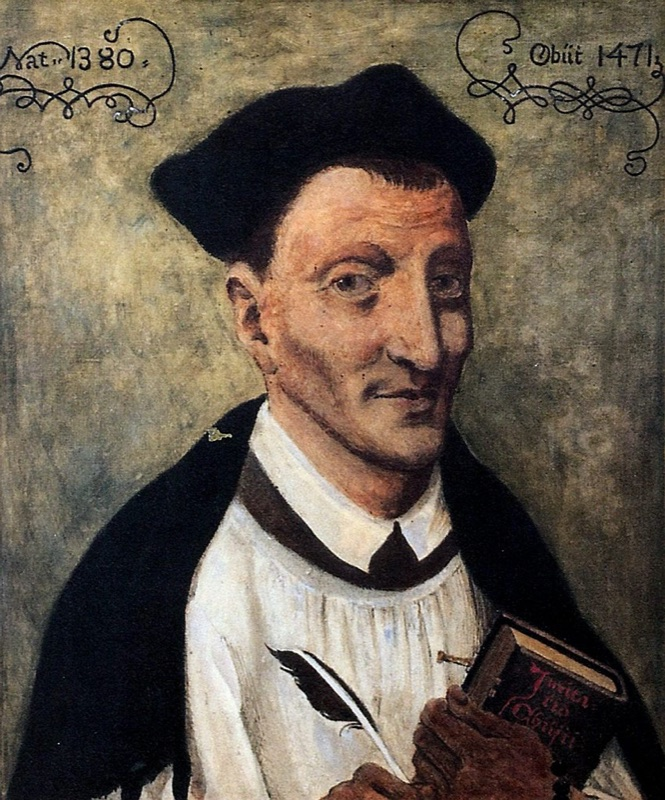
If each year should see one fault rooted out from us, we should go quickly on to perfection.Thomas à Kempis c. 1380–1471 The Imitation of Christ (De Imitatione Christi), c. 1418–1427 · Book I, ch. XI, §5 · Overs. William Benham Foto: zeitgenössischer Maler, Public domain, via Wikimedia Commons (https://commons.wikimedia.org/wiki/File:Thomas_von_Kempen_JS.JPG) · Public domain
Diligence is the mother of good fortune, and indolence, its opposite, never yet attained the object of an honest ambition.Miguel de Cervantes 1547–1616 Don Quixote, Part II, 1615 · Part II, ch. XLIII (Don Quixote's counsels to Sancho) · Overs. John Ormsby Foto: Attributed to Juan de Jáuregui, Public domain, via Wikimedia Commons (https://commons.wikimedia.org/wiki/File:Cervantes_J%C3%A1uregui.jpg) · Public domain
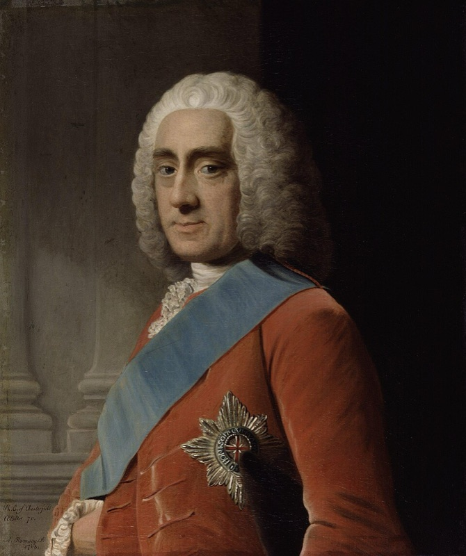
There is time enough for everything, in the course of the day, if you do but one thing at once; but there is not time enough in the year, if you will do two things at a time.Philip Stanhope, 4th Earl of Chesterfield 1694–1773 Letters to His Son, 1747 (publ. 1774) · Letter IX, London, April 14, O.S. 1747 Foto: Allan Ramsay, Public domain, via Wikimedia Commons (https://commons.wikimedia.org/wiki/File:Philip_Dormer_Stanhope,_4th_Earl_of_Chesterfield_by_Allan_Ramsay.jpg) · Public domain
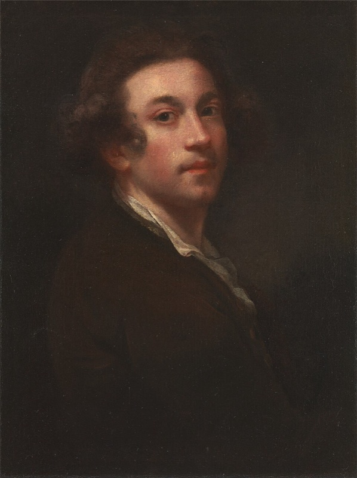
If you have great talents, industry will improve them: if you have but moderate abilities, industry will supply their deficiency.Sir Joshua Reynolds 1723–1792 Discourses on Art, 1769 · Discourse II (delivered 11 Dec 1769) Foto: Joshua Reynolds, Public domain, via Wikimedia Commons (https://commons.wikimedia.org/wiki/File:Sir_Joshua_Reynolds_-_Self-Portrait_-_Google_Art_Project_(2315517).jpg) · Public domain
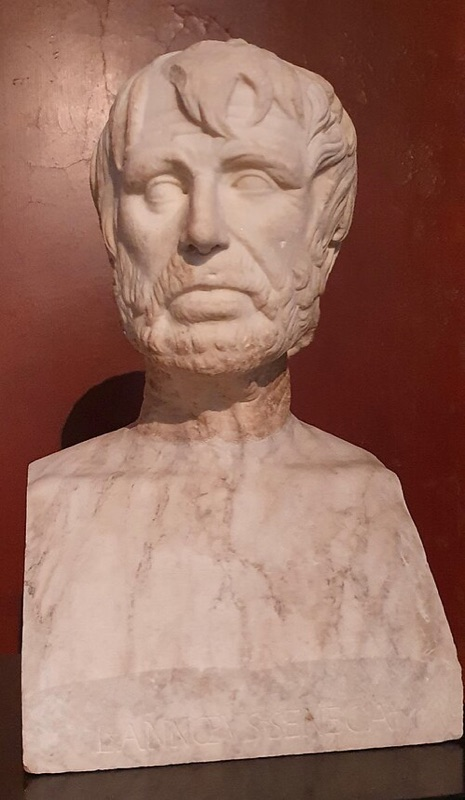
Work is no disgrace: it is idleness which is a disgrace.Hesiod fl. c. 700 BCE Works and Days, c. 700 BCE · Line 311 · Overs. Hugh G. Evelyn-White Foto: Yair Haklai, CC BY-SA 4.0, via Wikimedia Commons (https://commons.wikimedia.org/wiki/File:Bust_of_Hesiod_(%3F)-Ancient_Roman_busts_in_the_Neues_Museum.jpg) · CC BY-SA 4.0

Between us and Goodness the gods have placed the sweat of our brows … but when a man has reached the top, then is she easy to reach.Hesiod fl. c. 700 BCE Works and Days, c. 700 BCE · Lines 289–292 · Overs. Hugh G. Evelyn-White Foto: Yair Haklai, CC BY-SA 4.0, via Wikimedia Commons (https://commons.wikimedia.org/wiki/File:Bust_of_Hesiod_(%3F)-Ancient_Roman_busts_in_the_Neues_Museum.jpg) · CC BY-SA 4.0
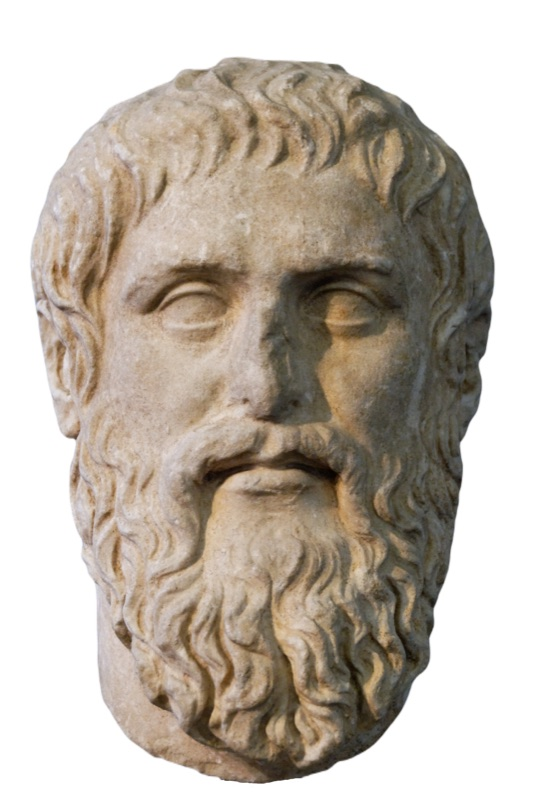
The beginning is the most important part of any work.Plato c. 428–348 BCE Republic, c. 375 BCE · Book II, 377a–b (Socrates speaking) · Overs. Benjamin Jowett Foto: © Marie-Lan Nguyen / Wikimedia Commons, CC BY 2.5 (https://commons.wikimedia.org/wiki/File:Plato_Silanion_Musei_Capitolini_MC1377.png) · CC BY 2.5
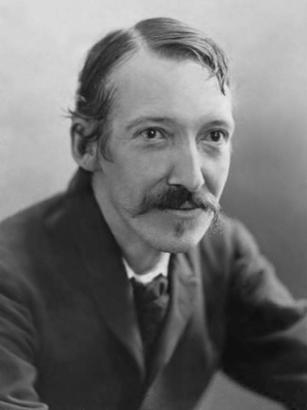
To travel hopefully is a better thing than to arrive, and the true success is to labour.Robert Louis Stevenson 1850–1894 'El Dorado', in Virginibus Puerisque, and Other Papers, 1881 · Essay 'El Dorado' (final sentence) Foto: Henry Walter Barnett, Public domain, via Wikimedia Commons (https://commons.wikimedia.org/wiki/File:Robert_Louis_Stevenson_by_Henry_Walter_Barnett_bw.jpg) · Public domain
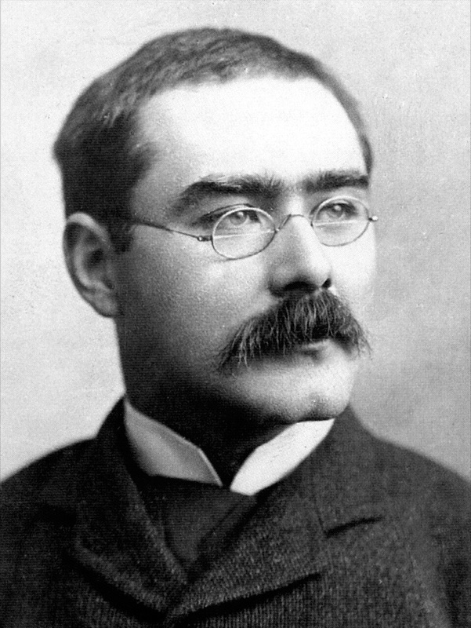
If you can fill the unforgiving minute / With sixty seconds' worth of distance run, / Yours is the Earth and everything that's in it.Rudyard Kipling 1865–1936 'If—', in Rewards and Fairies, 1910 · Poem 'If—', final stanza Foto: Elliott & Fry, Public domain, via Wikimedia Commons (https://commons.wikimedia.org/wiki/File:Rudyard_Kipling_(portrait).jpg) · Public domain

It is not enough to know, we must also apply; it is not enough to will, we must also do.Johann Wolfgang von Goethe 1749–1832 Maxims and Reflections (from Wilhelm Meisters Wanderjahre), 1829 · Saunders no. 324 (numbering adjacent to the text in Gutenberg #33670 — verify) · Overs. T. Bailey Saunders Foto: Joseph Karl Stieler, Public domain, via Wikimedia Commons (https://commons.wikimedia.org/wiki/File:Goethe_(Stieler_1828).jpg) · Public domain

In the fields of observation, chance only favours the mind which is prepared.Louis Pasteur 1822–1895 Inaugural lecture, Faculty of Sciences, Lille, 1854 (7 December) · Quoted in Vallery-Radot, The Life of Pasteur, ch. IV (1855–1859) · Overs. Mrs. R. L. Devonshire Foto: Paul Nadar, Public domain, via Wikimedia Commons (https://commons.wikimedia.org/wiki/File:Louis_Pasteur,_foto_av_Paul_Nadar,_Crisco_edit.jpg) · Public domain

Resolution. Resolve to perform what you ought; perform without fail what you resolve.Benjamin Franklin 1706–1790 The Autobiography of Benjamin Franklin, written 1784 (publ. 1791/1868) · Part II, list of thirteen virtues, no. 4 Foto: Joseph-Siffred Duplessis, Public domain, via Wikimedia Commons (https://commons.wikimedia.org/wiki/File:Joseph_Siffrein_Duplessis_-_Benjamin_Franklin_-_Google_Art_Project.jpg) · Public domain

Lose no time; be always employ'd in something useful; cut off all unnecessary actions.Benjamin Franklin 1706–1790 The Autobiography of Benjamin Franklin, written 1784 · Part II, list of thirteen virtues, no. 6 ('Industry') Foto: Joseph-Siffred Duplessis, Public domain, via Wikimedia Commons (https://commons.wikimedia.org/wiki/File:Joseph_Siffrein_Duplessis_-_Benjamin_Franklin_-_Google_Art_Project.jpg) · Public domain

Dost thou love life? then do not squander time, for that is the stuff life is made of.Benjamin Franklin 1706–1790 The Way to Wealth (preface to Poor Richard Improved), 1758 · Father Abraham's speech, quoting 'Poor Richard' Foto: Joseph-Siffred Duplessis, Public domain, via Wikimedia Commons (https://commons.wikimedia.org/wiki/File:Joseph_Siffrein_Duplessis_-_Benjamin_Franklin_-_Google_Art_Project.jpg) · Public domain

All the misfortunes of men arise from one thing only, that they are unable to stay quietly in their own chamber.Blaise Pascal 1623–1662 Pensées, 1670 (posthumous) · 'Diversion' (Brunschvicg 139 / Lafuma 136) · Overs. C. Kegan Paul Foto: unknown; a copy of the painting of François II Quesnel, which was made for Gérard Edelinck en 1691[réf. nécessaire]., Public domain, via Wikimedia Commons (https://commons.wikimedia.org/wiki/File:Blaise_Pascal_Versailles.JPG) · Public domain

Our life is frittered away by detail. … Simplicity, simplicity, simplicity!Henry David Thoreau 1817–1862 Walden; or, Life in the Woods, 1854 · Chapter 2, 'Where I Lived, and What I Lived For' Foto: Benjamin D. Maxham active 1848 - 1858, Public domain, via Wikimedia Commons (https://commons.wikimedia.org/wiki/File:Benjamin_D._Maxham_-_Henry_David_Thoreau_-_Restored.jpg) · Public domain

I went to the woods because I wished to live deliberately, to front only the essential facts of life, and see if I could not learn what it had to teach.Henry David Thoreau 1817–1862 Walden; or, Life in the Woods, 1854 · Chapter 2, 'Where I Lived, and What I Lived For' Foto: Benjamin D. Maxham active 1848 - 1858, Public domain, via Wikimedia Commons (https://commons.wikimedia.org/wiki/File:Benjamin_D._Maxham_-_Henry_David_Thoreau_-_Restored.jpg) · Public domain
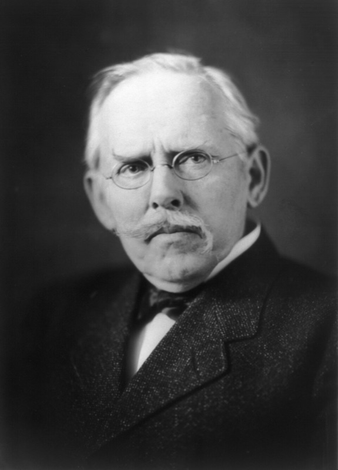
I would go and look at a stone-cutter hammering away at his rock … at the hundred and first blow it would split in two … it was not that blow that did it, but all that had gone before together.Jacob A. Riis 1849–1914 The Making of an American, 1901 · Chapter X Foto: Pirie MacDonald, Public domain, via Wikimedia Commons (https://commons.wikimedia.org/wiki/File:Jacob_Riis_2.jpg) · Public domain
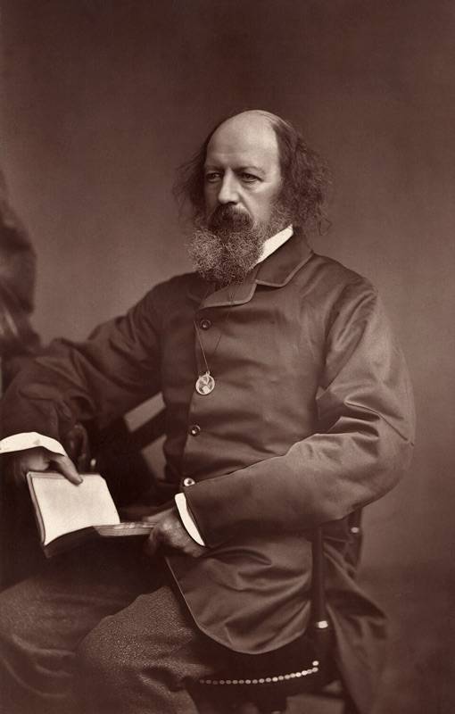
Made weak by time and fate, but strong in will / To strive, to seek, to find, and not to yield.Alfred, Lord Tennyson 1809–1892 'Ulysses', in Poems (2 vols.), 1842 · Final two lines Foto: Elliott & Fry, Public domain, via Wikimedia Commons (https://commons.wikimedia.org/wiki/File:Alfred,_Lord_Tennyson_by_Elliott_%26_Fry_-_Original.jpg) · Public domain
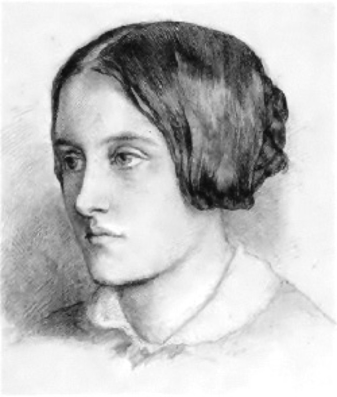
Does the road wind up-hill all the way? / Yes, to the very end. / Will the day's journey take the whole long day? / From morn to night, my friend.Christina Rossetti 1830–1894 'Up-Hill', in Goblin Market and Other Poems, 1862 · First stanza Foto: Dante Gabriel Rossetti, Public domain, via Wikimedia Commons (https://commons.wikimedia.org/wiki/File:Christina_Rossetti_3.jpg) · Public domain
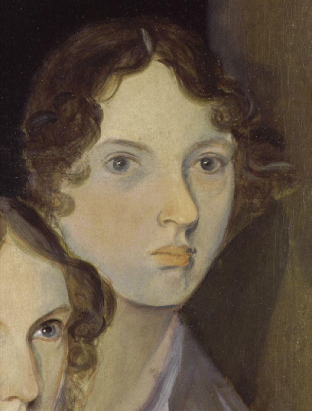
No coward soul is mine, / No trembler in the world's storm-troubled sphere.Emily Brontë 1818–1848 'No coward soul is mine', written 1846 (publ. 1850) · First two lines; printed by Charlotte Brontë as 'the last lines my sister Emily ever wrote' Foto: Branwell Brontë, Public domain, via Wikimedia Commons (https://commons.wikimedia.org/wiki/File:Emily_Bront%C3%AB_by_Patrick_Branwell_Bront%C3%AB_restored.jpg) · Public domain
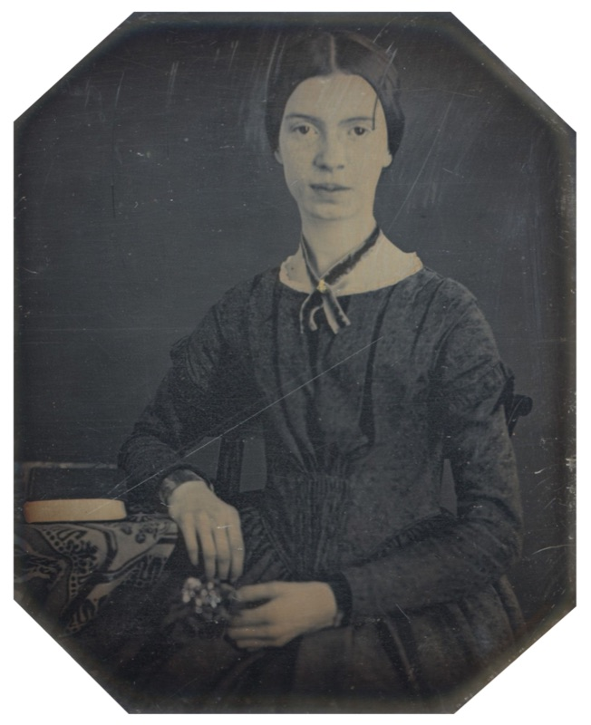
We never know how high we are / Till we are called to rise; / And then, if we are true to plan, / Our statures touch the skies.Emily Dickinson 1830–1886 'Aspiration' (J1176), in Poems by Emily Dickinson, Third Series, ed. Mabel Loomis Todd, 1896 · Part I ('Life'), no. XIV, first stanza Foto: Unknown author, Public domain, via Wikimedia Commons (https://commons.wikimedia.org/wiki/File:Black-white_photograph_of_Emily_Dickinson2.png) · Public domain
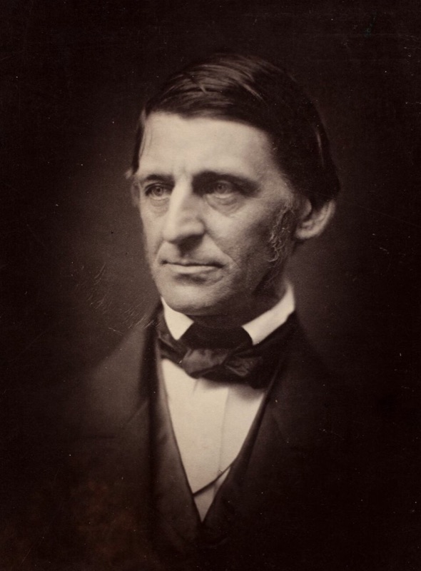
Do the thing, and you shall have the power.Ralph Waldo Emerson 1803–1882 'Compensation', in Essays: First Series, 1841 · Essay III, 'Compensation' Foto: Josiah Johnson Hawes, Public domain, via Wikimedia Commons (https://commons.wikimedia.org/wiki/File:Ralph_Waldo_Emerson_by_Josiah_Johnson_Hawes_1857.jpg) · Public domain
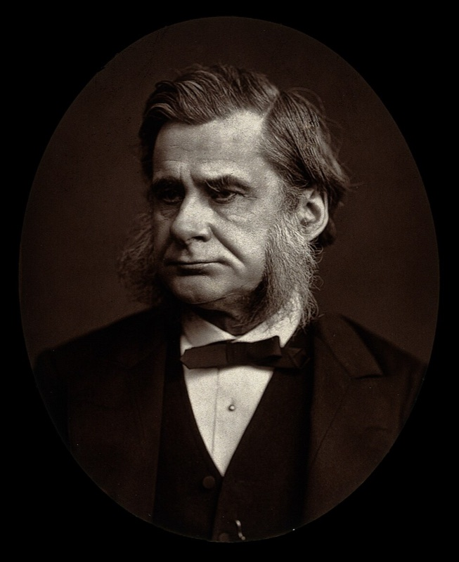
Perhaps the most valuable result of all education is the ability to make yourself do the thing you have to do, when it ought to be done, whether you like it or not.Thomas Henry Huxley 1825–1895 'Technical Education' (address, 1877), in Science and Culture, and Other Essays, 1877 (publ. 1881) · Essay 'Technical Education' Foto: Lock & Whitfield / Wellcome Collection, CC BY 4.0, via Wikimedia Commons (https://commons.wikimedia.org/wiki/File:Thomas_Henry_Huxley._Photograph_by_Lock_%26_Whitfield._Wellcome_V0026596.jpg) · CC BY 4.0

Seize the very first possible opportunity to act on every resolution you make.William James 1842–1910 The Principles of Psychology, vol. 1, 1890 · Chapter IV, 'Habit' (third maxim) Foto: Notman Studios (photographer), Public domain, via Wikimedia Commons (https://commons.wikimedia.org/wiki/File:William_James_b1842c.jpg) · Public domain
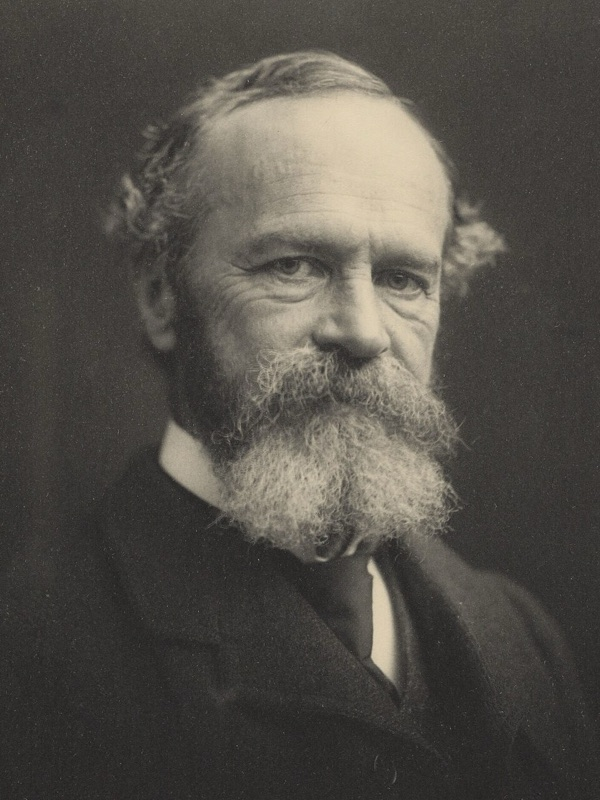
Keep the faculty of effort alive in you by a little gratuitous exercise every day.William James 1842–1910 The Principles of Psychology, vol. 1, 1890 · Chapter IV, 'Habit' (final maxim) Foto: Notman Studios (photographer), Public domain, via Wikimedia Commons (https://commons.wikimedia.org/wiki/File:William_James_b1842c.jpg) · Public domain

My experience is what I agree to attend to.William James 1842–1910 The Principles of Psychology, vol. 1, 1890 · Chapter XI, 'Attention' Foto: Notman Studios (photographer), Public domain, via Wikimedia Commons (https://commons.wikimedia.org/wiki/File:William_James_b1842c.jpg) · Public domain

I wish to preach, not the doctrine of ignoble ease, but the doctrine of the strenuous life, the life of toil and effort, of labor and strife.Theodore Roosevelt 1858–1919 'The Strenuous Life', speech to the Hamilton Club, Chicago (10 April 1899), 1899 · In The Strenuous Life: Essays and Addresses (1900), title essay, opening Foto: Pach Brothers, 1904 (restored by Adam Cuerden), public domain, via Wikimedia Commons (https://commons.wikimedia.org/wiki/File:Theodore_Roosevelt_by_the_Pach_Bros_(4x5_cropped)_(2).jpg) · Public domain

The credit belongs to the man who is actually in the arena, whose face is marred by dust and sweat and blood; who strives valiantly; who errs, who comes short again and again.Theodore Roosevelt 1858–1919 'Citizenship in a Republic', speech at the Sorbonne, Paris (23 April 1910), 1910 · 'The Man in the Arena' passage Foto: Pach Brothers, 1904 (restored by Adam Cuerden), public domain, via Wikimedia Commons (https://commons.wikimedia.org/wiki/File:Theodore_Roosevelt_by_the_Pach_Bros_(4x5_cropped)_(2).jpg) · Public domain

Although the world is full of suffering, it is full also of the overcoming of it.Helen Keller 1880–1968 Optimism: An Essay, 1903 · Part I, 'Optimism Within' Foto: Unknown author, Public domain, via Wikimedia Commons (https://commons.wikimedia.org/wiki/File:Helen_Keller_(circa_1904).jpg) · Public domain

Optimism is the faith that leads to achievement; nothing can be done without hope.Helen Keller 1880–1968 Optimism: An Essay, 1903 · Part III, 'The Practice of Optimism' Foto: Unknown author, Public domain, via Wikimedia Commons (https://commons.wikimedia.org/wiki/File:Helen_Keller_(circa_1904).jpg) · Public domain
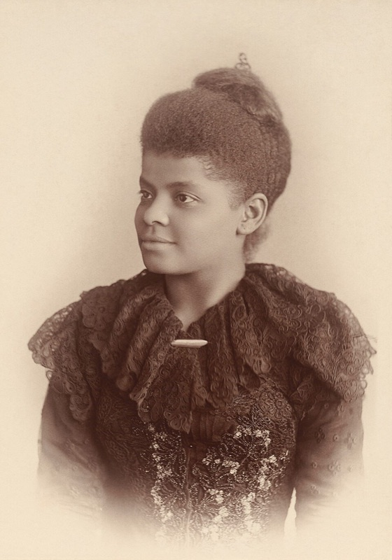
The people must know before they can act, and there is no educator to compare with the press.Ida B. Wells 1862–1931 Southern Horrors: Lynch Law in All Its Phases, 1892 · Final chapter, 'Self-Help' Foto: Mary Garrity, c. 1893 (restored by Adam Cuerden), public domain, via Wikimedia Commons (https://commons.wikimedia.org/wiki/File:Mary_Garrity_-_Ida_B._Wells-Barnett_-_Google_Art_Project_-_restoration_crop.jpg) · Public domain

Action is the only medium man has for receiving and appropriating truth.Jane Addams 1860–1935 Twenty Years at Hull-House, 1910 · Chapter VI, 'Subjective Necessity for Social Settlements' Foto: Bain News Service (restored by Adam Cuerden), public domain, via Wikimedia Commons (https://commons.wikimedia.org/wiki/File:Jane_Addams_-_Bain_News_Service.jpg) · Public domain

I was taught that the way of progress is neither swift nor easy.Marie Curie 1867–1934 Autobiographical Notes, in Pierre Curie, 1923 · Autobiographical Notes, ch. I · Overs. Charlotte Kellogg and Vernon Kellogg Foto: Henri Manuel, Public domain, via Wikimedia Commons (https://commons.wikimedia.org/wiki/File:Marie_Curie_c._1920s.jpg) · Public domain

It is not that we have a short space of time, but that we waste much of it.Seneca c. 4 BCE–65 CE On the Shortness of Life (De Brevitate Vitae), c. 49 CE · Chapter 1, §3 · Overs. John W. Basore Foto: Calidius, CC BY-SA 3.0, via Wikimedia Commons (https://commons.wikimedia.org/wiki/File:Duble_herma_of_Socrates_and_Seneca_Antikensammlung_Berlin_07.jpg) · CC BY-SA 3.0

Hold every hour in your grasp. Lay hold of to-day's task, and you will not need to depend so much upon to-morrow's.Seneca c. 4 BCE–65 CE Moral Letters to Lucilius, c. 65 CE · Letter 1 ('On saving time'), §2 · Overs. Richard M. Gummere Foto: Calidius, CC BY-SA 3.0, via Wikimedia Commons (https://commons.wikimedia.org/wiki/File:Duble_herma_of_Socrates_and_Seneca_Antikensammlung_Berlin_07.jpg) · CC BY-SA 3.0

Everywhere means nowhere.Seneca c. 4 BCE–65 CE Moral Letters to Lucilius, c. 65 CE · Letter 2 ('On discursiveness in reading'), §2 · Overs. Richard M. Gummere Foto: Calidius, CC BY-SA 3.0, via Wikimedia Commons (https://commons.wikimedia.org/wiki/File:Duble_herma_of_Socrates_and_Seneca_Antikensammlung_Berlin_07.jpg) · CC BY-SA 3.0

We become just by doing just acts, temperate by doing temperate acts, brave by doing brave acts.Aristotle 384–322 BCE Nicomachean Ethics, c. 340 BCE · Book II, ch. 1 (1103a34–b2) · Overs. W. D. Ross Foto: After Lysippos, Public domain, via Wikimedia Commons (https://commons.wikimedia.org/wiki/File:Aristotle_Altemps_Inv8575.jpg) · Public domain
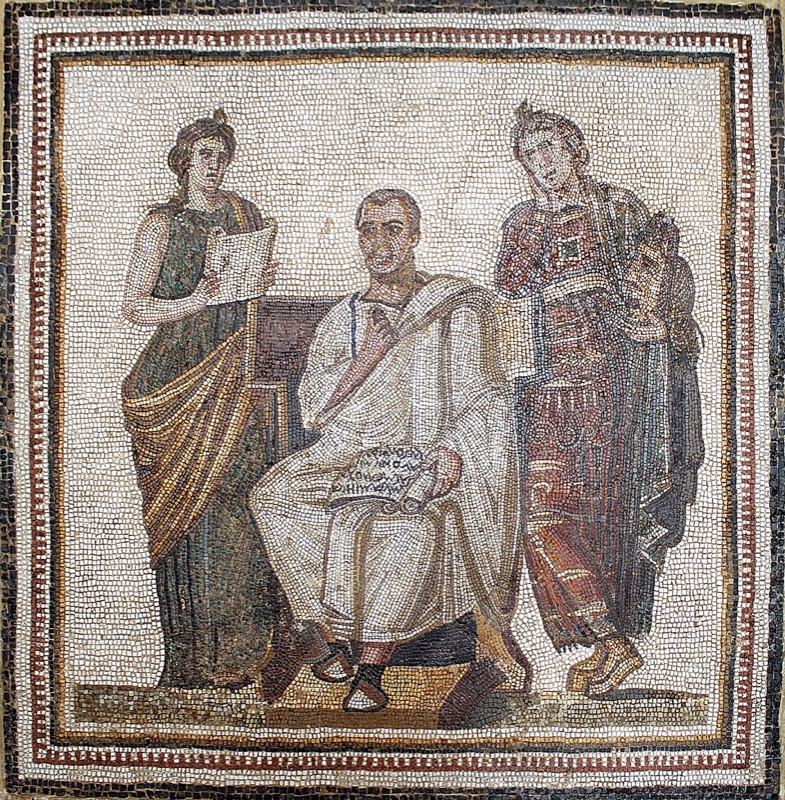
For they can conquer, who believe they can.Virgil 70–19 BCE Aeneid, c. 19 BCE · Book V, line 231 (Latin); the boat race · Overs. John Dryden Foto: Boyd Dwyer, CC BY-SA 2.0, via Wikimedia Commons (https://commons.wikimedia.org/wiki/File:Virgil_mosaic_in_the_Bardo_National_Museum_(Tunis)_(12241228546).jpg) · CC BY-SA 2.0

A man who dares to waste one hour of time has not discovered the value of life.Charles Darwin 1809–1882 Letter to his sister Susan Darwin, from HMS Beagle (4 Aug 1836), 1836 · Printed in Francis Darwin (ed.), The Life and Letters of Charles Darwin, vol. 1 (1887), ch. VI 'The Voyage' Foto: Charles_Darwin_seated.jpg: Henry Maull (1829–1914) and John Fox (1832–1907) (Maull & Fox) [3] derivative work: Beao, Public domain, via Wikimedia Commons (https://commons.wikimedia.org/wiki/File:Charles_Darwin_seated_crop.jpg) · Public domain

Determine never to be idle. No person will have occasion to complain of the want of time, who never loses any. It is wonderful how much may be done, if we are always doing.Thomas Jefferson 1743–1826 Letter to Martha Jefferson, Marseilles, 5 May 1787, 1787 · Papers of Thomas Jefferson, vol. 11 (Founders Online 01-11-02-0327) Foto: Rembrandt Peale, Public domain, via Wikimedia Commons (https://commons.wikimedia.org/wiki/File:Official_Presidential_portrait_of_Thomas_Jefferson_(by_Rembrandt_Peale,_1800).jpg) · Public domain
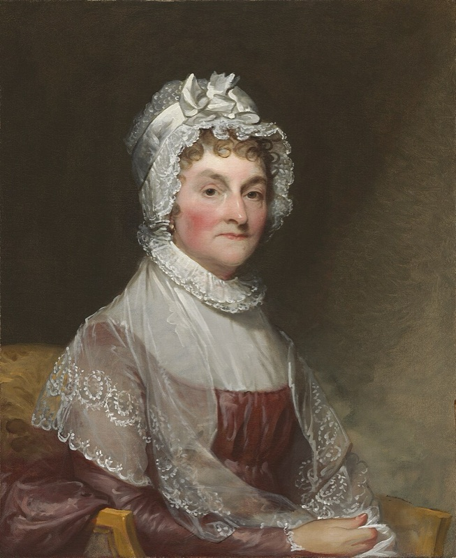
Learning is not attained by chance, it must be sought for with ardour and attended to with diligence.Abigail Adams 1744–1818 Letter to John Quincy Adams, 20 March 1780, 1780 · Adams Family Correspondence, vol. 3 (Adams Papers digital edition ADMS-04-03-02-0240) Foto: Gilbert Stuart, Public domain, via Wikimedia Commons (https://commons.wikimedia.org/wiki/File:Abigail_Adams_by_Gilbert_Stuart.jpg) · Public domain

The Habits of a vigorous mind are formed in contending with difficulties. … Great necessities call out great virtues.Abigail Adams 1744–1818 Letter to John Quincy Adams, 19 January 1780, 1780 · Adams Family Correspondence, vol. 3 (ADMS-04-03-02-0207) Foto: Gilbert Stuart, Public domain, via Wikimedia Commons (https://commons.wikimedia.org/wiki/File:Abigail_Adams_by_Gilbert_Stuart.jpg) · Public domain
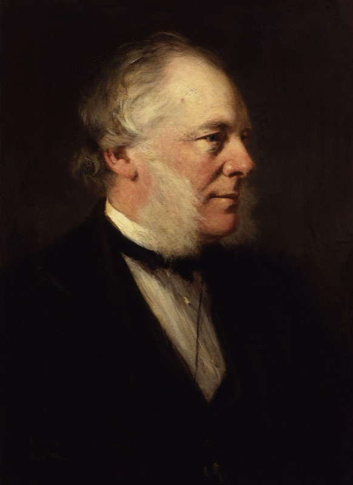
It is not eminent talent that is required to ensure success in any pursuit, so much as purpose,—not merely the power to achieve, but the will to labour energetically and perseveringly.Samuel Smiles 1812–1904 Self-Help; with Illustrations of Character and Conduct, 1859 · Chapter VIII, 'Energy and Courage' Foto: George Reid, Public domain, via Wikimedia Commons (https://commons.wikimedia.org/wiki/File:Samuel_Smiles_by_Sir_George_Reid.jpg) · Public domain
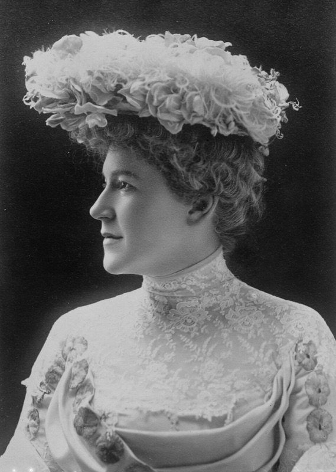
Build on resolve, and not upon regret, / The structure of thy future.Ella Wheeler Wilcox 1850–1919 'Resolve', in Poems of Passion, 1883 · Opening lines Foto: Bain News Service, publisher, Public domain, via Wikimedia Commons (https://commons.wikimedia.org/wiki/File:Ella_W._Wilcox_LCCN2014709802_(cropped).jpg) · Public domain

Let us, then, be up and doing, / With a heart for any fate; / Still achieving, still pursuing, / Learn to labor and to wait.Henry Wadsworth Longfellow 1807–1882 'A Psalm of Life', in Voices of the Night, 1838 (book 1839) · Final stanza Foto: Julia Margaret Cameron, Public domain, via Wikimedia Commons (https://commons.wikimedia.org/wiki/File:Henry_Wadsworth_Longfellow,_photographed_by_Julia_Margaret_Cameron_in_1868.jpg) · Public domain
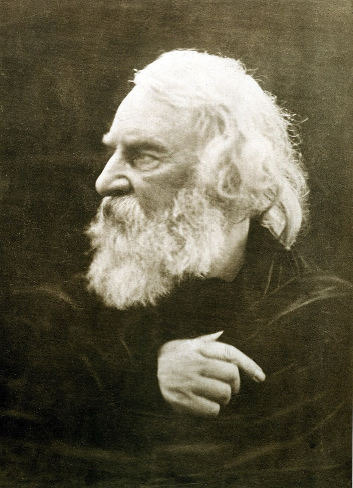
The heights by great men reached and kept / Were not attained by sudden flight, / But they, while their companions slept, / Were toiling upward in the night.Henry Wadsworth Longfellow 1807–1882 'The Ladder of St. Augustine', in The Courtship of Miles Standish and Other Poems (Birds of Passage), 1858 · Stanza 10 Foto: Julia Margaret Cameron, Public domain, via Wikimedia Commons (https://commons.wikimedia.org/wiki/File:Henry_Wadsworth_Longfellow,_photographed_by_Julia_Margaret_Cameron_in_1868.jpg) · Public domain
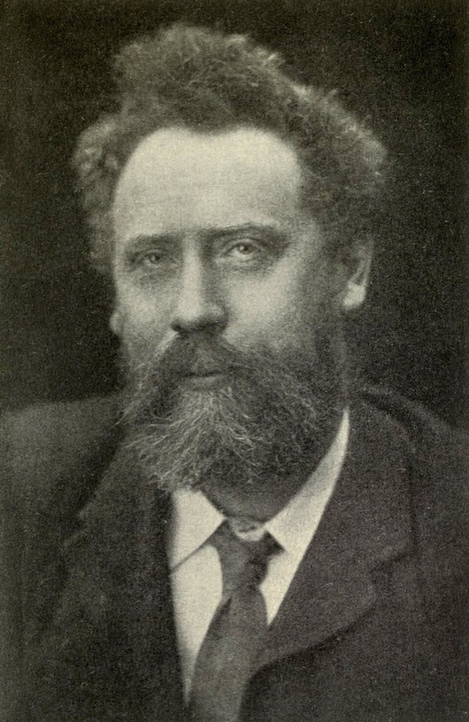
I am the master of my fate: / I am the captain of my soul.William Ernest Henley 1849–1903 'Invictus' (untitled 'Out of the night that covers me' in A Book of Verses), written 1875, publ. 1888 · Final two lines Foto: not stated, Public domain, via Wikimedia Commons (https://commons.wikimedia.org/wiki/File:William_Ernest_Henley%60s_Portrait.jpg) · Public domain

Our doubts are traitors, / And make us lose the good we oft might win / By fearing to attempt.William Shakespeare 1564–1616 Measure for Measure, c. 1603–04 (First Folio 1623) · Act I, Scene 4 (Lucio to Isabella) Foto: Attributed to John Taylor, Public domain, via Wikimedia Commons (https://commons.wikimedia.org/wiki/File:William_Shakespeare_by_John_Taylor,_edited.jpg) · Public domain
There is a tide in the affairs of men, / Which, taken at the flood, leads on to fortune; / Omitted, all the voyage of their life / Is bound in shallows and in miseries.William Shakespeare 1564–1616 Julius Caesar, c. 1599 (First Folio 1623) · Act IV, Scene 3 (Brutus) Foto: Attributed to John Taylor, Public domain, via Wikimedia Commons (https://commons.wikimedia.org/wiki/File:William_Shakespeare_by_John_Taylor,_edited.jpg) · Public domain

For the great doesn't happen through impulse alone, and is a succession of little things that are brought together.Vincent van Gogh 1853–1890 Letter to Theo van Gogh, The Hague, 22 October 1882, 1882 · Letter 274 (Brieven 1990 274; Complete Letters 237) · Overs. Van Gogh Museum / Huygens ING translation team Foto: Vincent van Gogh, Public domain, via Wikimedia Commons (https://commons.wikimedia.org/wiki/File:Vincent_van_Gogh_-_Self-Portrait_-_Google_Art_Project_(454045).jpg) · Public domain
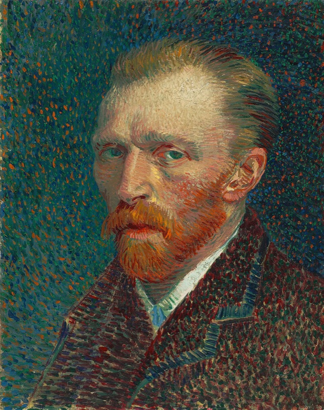
If something in you yourself says 'you aren't a painter'—IT'S THEN THAT YOU SHOULD PAINT, old chap, and that voice will be silenced too.Vincent van Gogh 1853–1890 Letter to Theo van Gogh, Nieuw-Amsterdam, 28 October 1883, 1883 · Letter 400 (Brieven 1990 401; Complete Letters 336) · Overs. Van Gogh Museum / Huygens ING translation team Foto: Vincent van Gogh, Public domain, via Wikimedia Commons (https://commons.wikimedia.org/wiki/File:Vincent_van_Gogh_-_Self-Portrait_-_Google_Art_Project_(454045).jpg) · Public domain

Never give in, never give in, never, never, never—in nothing, great or small, large or petty—never give in except to convictions of honour and good sense.Winston Churchill 1874–1965 Speech at Harrow School, 1941 (29 October) · International Churchill Society transcript Foto: British Government / Imperial War Museum, public domain, via Wikimedia Commons (https://commons.wikimedia.org/wiki/File:Churchill_portrait_NYP_45063.jpg) · Public domain (PD-UKGov)

If there is no struggle there is no progress.Frederick Douglass 1818–1895 'West India Emancipation' (The Significance of Emancipation in the West Indies), address at Canandaigua, New York, 1857 (3 August) · Frederick Douglass Papers Project digital edition, item 10509 Foto: George Kendall Warren, Public domain, via Wikimedia Commons (https://commons.wikimedia.org/wiki/File:Frederick_Douglass_(circa_1879)_(cropped).jpg) · Public domain

Arise, awake, and stop not till the goal is reached.Swami Vivekananda 1863–1902 Lectures from Colombo to Almora: "The Mission of the Vedanta" (Kumbakonam, 1897), Complete Works vol. 3, 1897 · Complete Works, vol. 3 (rendering Katha Upanishad 1.3.14) Foto: Unknown photographer, Chicago, 1893, public domain, via Wikimedia Commons (https://commons.wikimedia.org/wiki/File:Swami_Vivekananda-1893-09-signed.jpg) · Public domain
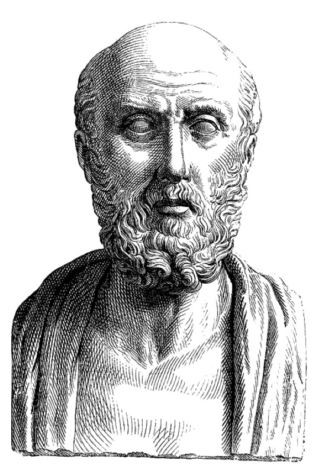
Life is short, and Art long; the crisis fleeting; experience perilous, and decision difficult.Hippocrates (Hippocratic Corpus) c. 460–c. 370 BCE Aphorisms, c. 400 BCE · Section I, Aphorism 1 · Overs. Francis Adams Foto: Unidentified engraver, Public domain, via Wikimedia Commons (https://commons.wikimedia.org/wiki/File:Hippocrates.jpg) · Public domain
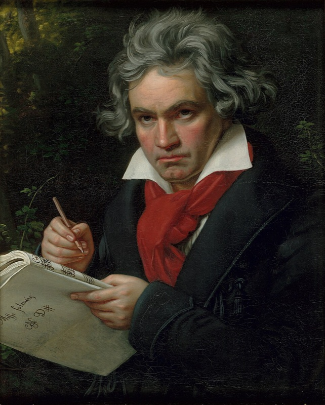
I will boldly meet my fate, never shall it succeed in crushing me.Ludwig van Beethoven 1770–1827 Letter to Franz Wegeler, Vienna, 16 November 1801, 1801 · Wallace vol. 1, Letter 18 · Overs. Lady Grace Wallace Foto: Joseph Karl Stieler, Public domain, via Wikimedia Commons (https://commons.wikimedia.org/wiki/File:Joseph_Karl_Stieler%27s_Beethoven_mit_dem_Manuskript_der_Missa_solemnis.jpg) · Public domain
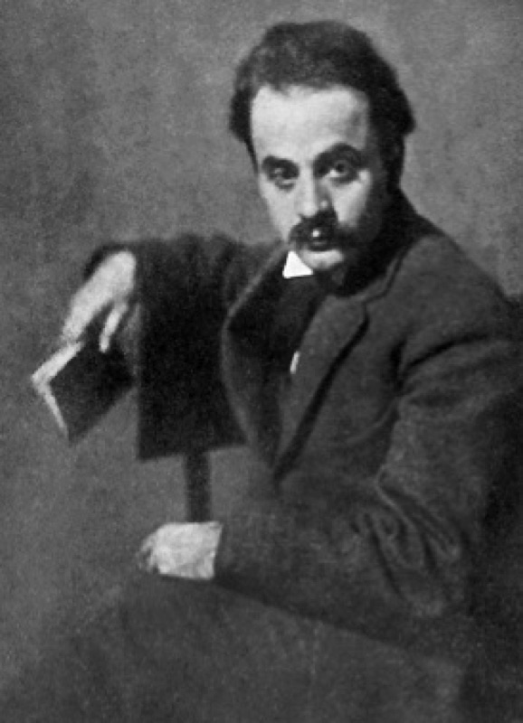
Work is love made visible.Kahlil Gibran 1883–1931 The Prophet, 1923 · 'On Work' Foto: Unknown author, Public domain, via Wikimedia Commons (https://commons.wikimedia.org/wiki/File:Kahlil_Gibran_1913.jpg) · Public domain
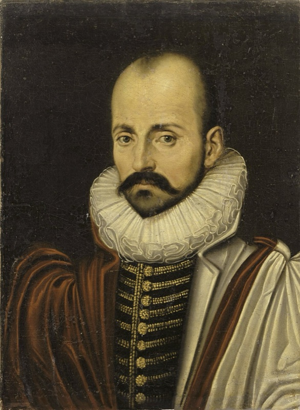
The soul that has no established aim loses itself.Michel de Montaigne 1533–1592 Essays (Essais), 1580 · Book I, ch. 8, 'Of Idleness' · Overs. Charles Cotton (rev. William Carew Hazlitt) Foto: Unknown author, Public domain, via Wikimedia Commons (https://commons.wikimedia.org/wiki/File:Portrait_of_Michel_de_Montaigne,_circa_unknown.jpg) · Public domain

Deeds, not words, was to be our permanent motto.Emmeline Pankhurst 1858–1928 My Own Story, 1914 · Book I, ch. III (founding of the WSPU, 1903) Foto: Matzene, Chicago, 1913 (restored by Adam Cuerden), public domain, via Wikimedia Commons (https://commons.wikimedia.org/wiki/File:Emmeline_Pankhurst,_seated_(1913).jpg) · Public domain

I came, I saw, I conquered.Julius Caesar 100–44 BCE Inscription displayed at his Pontic triumph (46 BCE), reported by Suetonius, 47–46 BCE · Suetonius, Divus Julius 37.2 · Overs. J. C. Rolfe Foto: Ángel M. Felicísimo, CC BY 2.0, via Wikimedia Commons (https://commons.wikimedia.org/wiki/File:Retrato_de_Julio_C%C3%A9sar_(26724093101)_(cropped).jpg) · CC BY 2.0

That is done quickly enough which is done well enough.Augustus 63 BCE–14 CE Favourite saying, reported by Suetonius, c. 121 CE (Suetonius) · Suetonius, Divus Augustus 25.4 · Overs. J. C. Rolfe Foto: Justin Benttinen, CC BY-SA 4.0, via Wikimedia Commons (https://commons.wikimedia.org/wiki/File:Augustus_of_Prima_Porta.jpg) · CC BY-SA 4.0

You must make up your mind to steady and earnest work. You must be content to get on slowly if you only get on thoroughly.Maria Mitchell 1818–1889 Address to her students at Vassar College, recorded in Phebe Mitchell Kendall (ed.), Maria Mitchell: Life, Letters, and Journals, 1866 (publ. 1896) · Section headed '1866. To her students' Foto: H. Dassell, Public domain, via Wikimedia Commons (https://commons.wikimedia.org/wiki/File:Maria_Mitchell.jpg) · Public domain

Strength does not come from physical capacity. It comes from an indomitable will.Mahatma Gandhi 1869–1948 'The Doctrine of the Sword', Young India, 1920 (11 August) · Young India, 11 Aug 1920; Collected Works of Mahatma Gandhi vol. 18 (CWMG volume number not confirmed) Foto: Elliott & Fry, Public domain, via Wikimedia Commons (https://commons.wikimedia.org/wiki/File:Mahatma-Gandhi,_studio,_1931.jpg) · Public domain

Always bear in mind that your own resolution to succeed, is more important than any other one thing.Abraham Lincoln 1809–1865 Letter to Isham Reavis, Springfield, 1855 (5 November) · Collected Works of Abraham Lincoln, ed. Roy P. Basler, vol. 2, p. 327 (page from memory — verify) Foto: Alexander Gardner, Public domain, via Wikimedia Commons (https://commons.wikimedia.org/wiki/File:Abraham_Lincoln_O-77_matte_collodion_print.jpg) · Public domain

Purity of heart is to will one thing.Søren Kierkegaard 1813–1855 Opbyggelige Taler i forskjellig Aand (Upbuilding Discourses in Various Spirits), Part One, 1847 · Title and thesis of the first part ('En Leiligheds-Tale') · Overs. Douglas V. Steere Foto: Niels Christian Kierkegaard, c. 1840 (Royal Danish Library), public domain, via Wikimedia Commons (https://commons.wikimedia.org/wiki/File:S%C3%B8ren_Kierkegaard_(1813-1855)_-_(cropped).jpg) · Public domain

It is perfectly true, as philosophers say, that life must be understood backwards. But they forget the other proposition, that it must be lived forwards.Søren Kierkegaard 1813–1855 Journals (Papirer IV A 164; SKS JJ:167), 1843 · Journal entry 1843 (Papirer IV A 164; SKS JJ:167); Dru selection, Harper Torchbook ed. 1959, p. 89 · Overs. Alexander Dru Foto: La Biblioteca Real de Dinamarca, Public domain, via Wikimedia Commons (https://commons.wikimedia.org/wiki/File:S%C3%B8ren_Kierkegaard_(1813-1855)_-_(cropped).jpg) · Public domain

Problems worthy / of attack / prove their worth / by hitting back.Piet Hein 1905–1996 'Problems', in Grooks, 1966 · Grooks (MIT Press, 1966), p. [10] Foto: André Savik, CC BY 3.0, via Wikimedia Commons (https://commons.wikimedia.org/wiki/File:Piet_Hein_and_H.C._Andersen_(cropped).jpg) · CC BY 3.0

You must do the thing you think you cannot do.Eleanor Roosevelt 1884–1962 You Learn by Living, 1960 · Chapter 'Fear—the Great Enemy' (p. 29–30 in the 1960 Harper edition — page not seen) Foto: FDR Presidential Library & Museum, CC BY 2.0, via Wikimedia Commons (https://commons.wikimedia.org/wiki/File:Eleanor_Roosevelt_at_the_United_Nations,_circa_1946-1947_(3x4_cropped).jpg) · CC BY 2.0
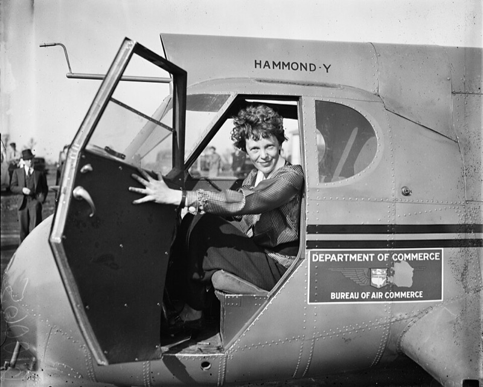
Women must try to do things as men have tried. When they fail, their failure must be but a challenge to others.Amelia Earhart 1897–1937 Note to George Palmer Putnam, to be read if she did not return; printed in Last Flight (arranged by G. P. Putnam), c. 1937 (publ. 1937) · Last Flight, arranged by G. P. Putnam (1937); Harbrace reprint 1965, p. 208 Foto: Harris & Ewing, Public domain, via Wikimedia Commons (https://commons.wikimedia.org/wiki/File:Amelia_Earhart_LOC_hec.40747.jpg) · Public domain

Failure is impossible.Susan B. Anthony 1820–1906 Remarks at her 86th birthday celebration, Washington, D.C. (National American Woman Suffrage Association), 1906 (15 February) · History of Woman Suffrage, vol. 5, ch. 6 (quoting Harper, Life and Work of Susan B. Anthony, vol. 3) Foto: Unknown author, Public domain, via Wikimedia Commons (https://commons.wikimedia.org/wiki/File:SB_Anthony_from_RoRaWW.jpg) · Public domain
Absolutely unmixed attention is prayer.Simone Weil 1909–1943 La Pesanteur et la grâce (notebook extracts ed. Gustave Thibon), written c. 1940–42, publ. 1947 · "Attention and Will", p. 106 (Routledge & Kegan Paul, 1952) · Overs. Emma Crawford Foto: Unknown, Public domain, via Wikimedia Commons (https://commons.wikimedia.org/wiki/File:Simone_Weil_1943.jpg) · Public domain

Genius is one per cent inspiration, ninety-nine per cent perspiration.Thomas Edison 1847–1931 M. A. Rosanoff, "Edison in His Laboratory", Harper's Magazine vol. 165 (Sept. 1932), p. 406; earlier in Dyer & Martin, Edison: His Life and Inventions (1910), vol. 2, p. 607, 1932 · Quote Investigator, 'Genius is one percent inspiration…' (14 Dec 2012) Foto: Louis Bachrach, Bachrach Studios, restored by Michel Vuijlsteke, Public domain, via Wikimedia Commons (https://commons.wikimedia.org/wiki/File:Thomas_Edison2.jpg) · Public domain
Today is victory over yourself of yesterday; tomorrow is your victory over lesser men.Miyamoto Musashi c. 1584–1645 Go Rin no Sho (The Book of Five Rings), 1645 · The Water Book, closing passage; Harris tr., Overlook Press 1974, p. 66 · Overs. Victor Harris Foto: Miyamoto Musashi, Public domain, via Wikimedia Commons (https://commons.wikimedia.org/wiki/File:Portrait_of_Miyamoto_Musashi_(detail).webp) · Public domain